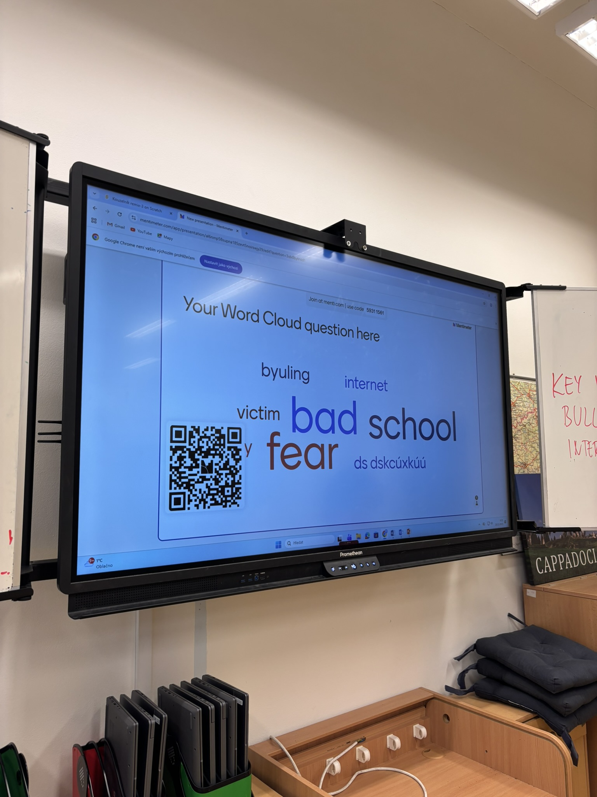

🇨🇿 Czechia Partnership Materials
Educational collaborations, international student workshops, and joint anti-cyberbullying outcomes conducted with our partner school in Czechia.
Czechia Partnership and Project Contributions
🌍
International Cooperation
Czech students actively participated alongside Italian, Portuguese, and Turkish peers in multilingual, intercultural collaborative working groups.
💡
Innovative Learning Methods
Best pedagogical practices and European-level methodologies in digital media literacy and peer bullying prevention were exchanged and implemented.
🎯
Amanda's Case Study
Led case analysis sessions encouraging students to shift from passive bystanders to active, empathetic upstanders when witnessing bullying.
Czechia School Activities and Workshop Photos

Logo Design & Creative Workshop

IT Lesson & Digital Safety Session

Interactive Word Cloud Activity

Cyberbullying and Emotions Workshop

Meeting the School Team & City Tour
Joint Educational Documents and Workshop Guides
Amanda's Case Workshop Guide
Group Activity: Amanda's Case • PDF Document • 353 KB
Cyberbullying and Digital Skills Handbook
Understanding Cyberbullying and Digital Skills • PDF Document • 3.7 MB
Digital Citizenship as Part of Civic Education
Digital Citizenship as Part of Civic Education • PDF Document • 246 KB